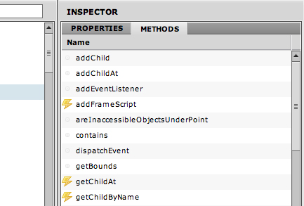
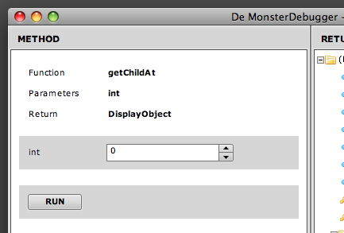
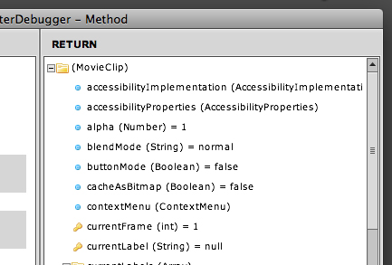

Running Methods
When you click on an object in the live application panel, the inspector panel will display it's properties and methods.
To run a method, just double click on its name.
Note: You can execute a method on runtime if the required arguments are of the type String, Number, Boolean, int or uint.

Again, we use icons to distinct between different method types.
| Icon |
Description |
 |
Non runable method |
 |
Runable method |
If you double click on a runnable method, a dialogue window will appear.
In this example we've clicked the getChildAt() function.
This method requires an integer as argument and will return a DisplayObject.

When you hit RUN, De MonsterDebugger will ask your application to execute the function, it will catch the return value and send it directly back to you.
The return object is displayed in the same readable manner as a regular trace (as can be seen below).
